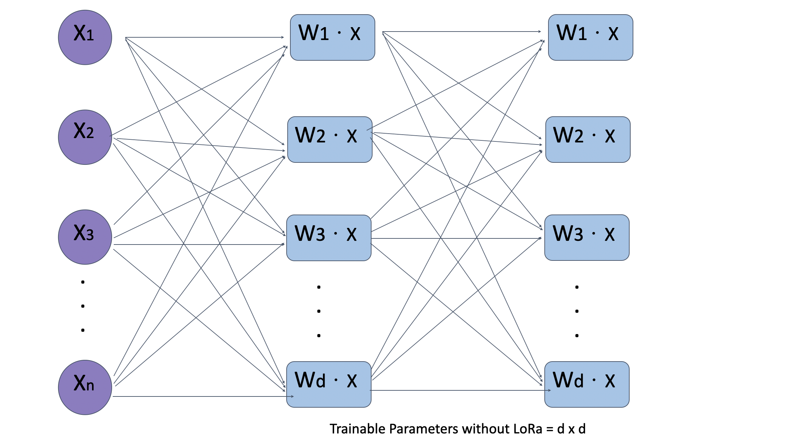
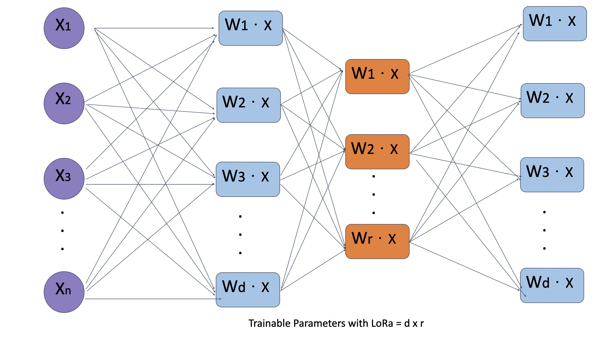

Low Rank Adaptation (LoRA) and Sparse Autoencoders
Written by Yahya Rahhawi
Introduction
Challenges in Fine-Tuning Large Models
Large Language Models (LLMs) like GPT and BERT are powerful but face several challenges:
- Massive Size: LLMs contain billions of parameters, making them computationally intensive.
- Domain Adaptation: Tasks like understanding medical or legal terminology require model fine-tuning.
- High Computational Costs: Fine-tuning all parameters of such models is resource-heavy and time-consuming.
Solution: Low Rank Adaptation (LoRA) provides a parameter-efficient approach to fine-tuning by updating only a subset of parameters, maintaining performance while significantly reducing costs.
How LoRA Works
Key Idea
LoRA approximates the weight matrix \(W\) using low-rank decomposition:
\[ W \approx W_0 + A \times B \]
Where: - \(W_0\): Pre-trained weight matrix (frozen during fine-tuning). - \(A\): Low-rank matrix of size \(d \times r\). - \(B\): Low-rank matrix of size \(r \times k\). - \(r\): Rank of decomposition, controlling the trade-off between computational efficiency and accuracy.
This reduces trainable parameters from \(O(d \times k)\) to \(O(d \times r + r \times k)\), where \(r \ll k\).
Self-Attention and LoRA Integration
Original Self-Attention:
In transformers, attention is computed as: \[ \text{Attention} = \text{Softmax}(QK^\top)V \] Where: - \(Q\), \(K\), and \(V\) are weight matrices for queries, keys, and values.
Computational Complexity: \(O(n^2d)\) for a single layer, where \(d\) is the dimensionality of the weight matrices.
LoRA Optimization:
LoRA modifies \(Q\) and \(K\) with low-rank decomposition: \[ Q' = Q_0 + A_1B_1, \quad K' = K_0 + A_2B_2 \]
This reduces the complexity to \(O(n^2r)\), where \(r\) is much smaller than \(d\). Consequently: - Reduced Cost: Memory and computation requirements drop significantly. - Efficiency Gains: Focused updates ensure faster fine-tuning.
Advantages of LoRA
- Parameter Efficiency: Only \(A\) and \(B\) are updated, reducing memory and computational overhead.
- Scalability: Works effectively with large models in constrained environments.
- Task-Specific Adaptation: Fine-tunes models for niche domains without retraining the entire network.
Challenges
- Trade-offs: Low-rank approximation may slightly degrade performance for highly complex tasks.
- Hyperparameter Sensitivity: Selecting the optimal rank \(r\) is critical for balancing efficiency and accuracy.
Comparison of LoRA Performance:
Below are visual representations of model performance with and without LoRA:
Without LoRA: 
With LoRA: 
Sparse Autoencoders
Overview
Sparse autoencoders are designed to learn compressed, meaningful representations of input data by enforcing sparsity constraints on the bottleneck layer.
How They Work
Encoder: Compresses input \(X\) to a low-dimensional representation \(Z\): \[ Z = f(W_eX + b_e) \]
Sparse Bottleneck: Introduces sparsity using penalties like \(L_1\) regularization or KL divergence: \[ \text{Sparsity Penalty} = \sum \text{KL}(\rho \parallel \hat{\rho}) \]
KL divergence measures the difference between two probability distributions, ( P ) (true distribution) and ( Q ) (approximation). It quantifies how much information is lost when using ( Q ) instead of ( P ), with the formula involving the logarithmic ratio of probabilities. KL divergence is asymmetric, meaning ( D_{}(P Q) D_{}(Q P) ), and always non-negative, being zero only when ( P ) and ( Q ) are identical. It’s widely used in machine learning, information theory, and probabilistic models to evaluate how well one distribution approximates another.
- Decoder: Reconstructs the input from \(Z\): \[ X' = f(W_dZ + b_d) \]
Loss Function
Minimizes: \[ \text{Loss} = \text{Reconstruction Loss} + \text{Sparsity Penalty} \]
Mathematical Insights
Low-Rank Decomposition:
- The low-rank approximation of \(W\) enables significant savings in computational complexity while retaining most of the model’s expressive power.
Attention Mechanisms:
- Attention layers rely on \(Q\), \(K\), and \(V\) weight matrices.
- LoRA applies decomposed matrices (\(A\), \(B\)) to specific layers, minimizing the need to modify the frozen \(W_0\).
Computational Trade-offs:
- For rank \(r\), the total parameters added are linear in \(r\) rather than quadratic in \(d\). This results in substantial reductions in both memory usage and training time.
Applications of LoRA:
- Medical Applications: Fine-tuning models to understand clinical terminology.
- Legal Industry: Adaptation for domain-specific jargon and context-sensitive understanding.
- Resource-Constrained Environments: Efficient tuning of models on edge devices.
Sparse Autoencoders: Advanced Details
Sparsity Constraints:
- Enforcing sparsity promotes the learning of disentangled representations, often critical for feature extraction and compression tasks.
Use Cases:
- Dimensionality Reduction: Effective for data visualization and compression.
- Pre-training for Neural Networks: Acts as an initialization method for downstream tasks.
Conclusion
- LoRA: Mostly used in fine-tuning large-scale models by introducing low-rank updates, making it cost-effective and scalable.
- Sparse Autoencoders: Serve as a tool for learning meaningful representations but are more suited for feature extraction and data compression than model adaptation.